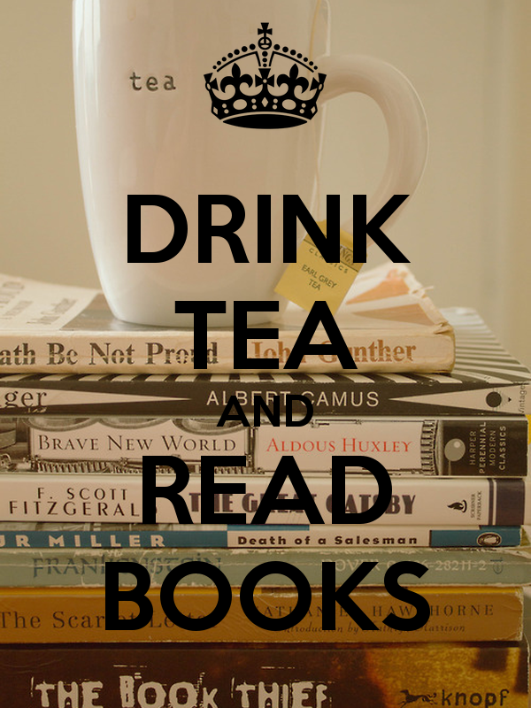

<script type="text/html" id="homepage_tmpl">
<div class="wrapper">
  <div class="disabler"></div>
  <header class="header">
    <menu class="menu">
    </menu>
    <section class="main-page">
      <nav class="nav">
        <button class="mobile-menu-btn">hey</button>
        
      </nav>
    </section>
  </header>
  
  <main class="main">
    <h1>Will be filled by Hogan</h1>
    
    <p>On this site you will find the full and unabridged texts of classic works of English literature. Fiction from authors like Lewis Carroll, the Bronte sisters (Anne, Charlotte and Emily), Jack London, Mark Twain, Charles Dickens and many others, and classic scientific works from Charles Darwin and Rene Descartes.
More books will be added soon, however as this site is maintained by enthusiasts rather than professional librarians this may be a very slow process. Our sponsor, the people behind the knowledge.com™ directory, is currently working on new technology that will make this updating easier and quicker in the near future. </p>
  </main>
 
 <footer class="footer"><span>Copyright information</span></footer>
</div><!--wrapper-->
</script>
